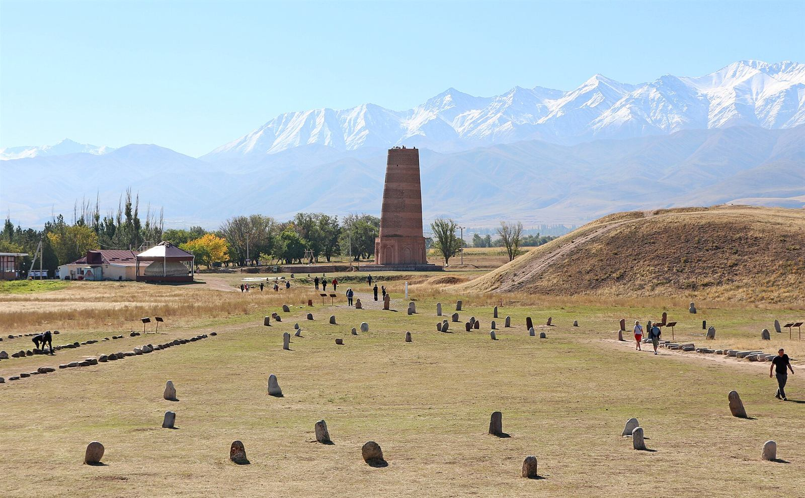
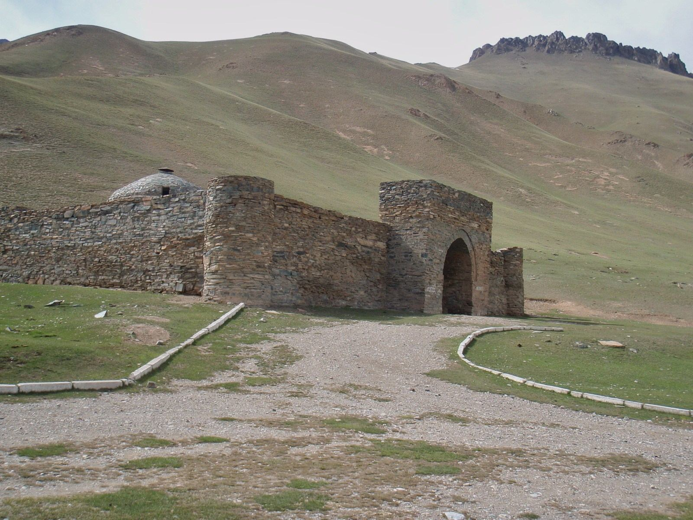
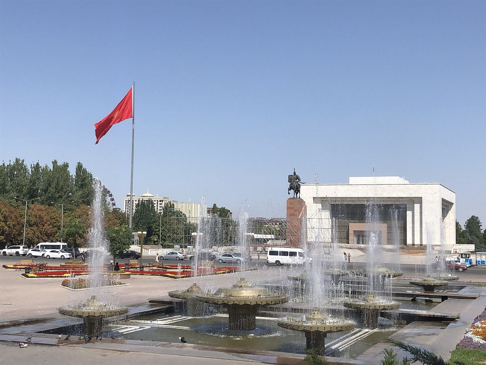
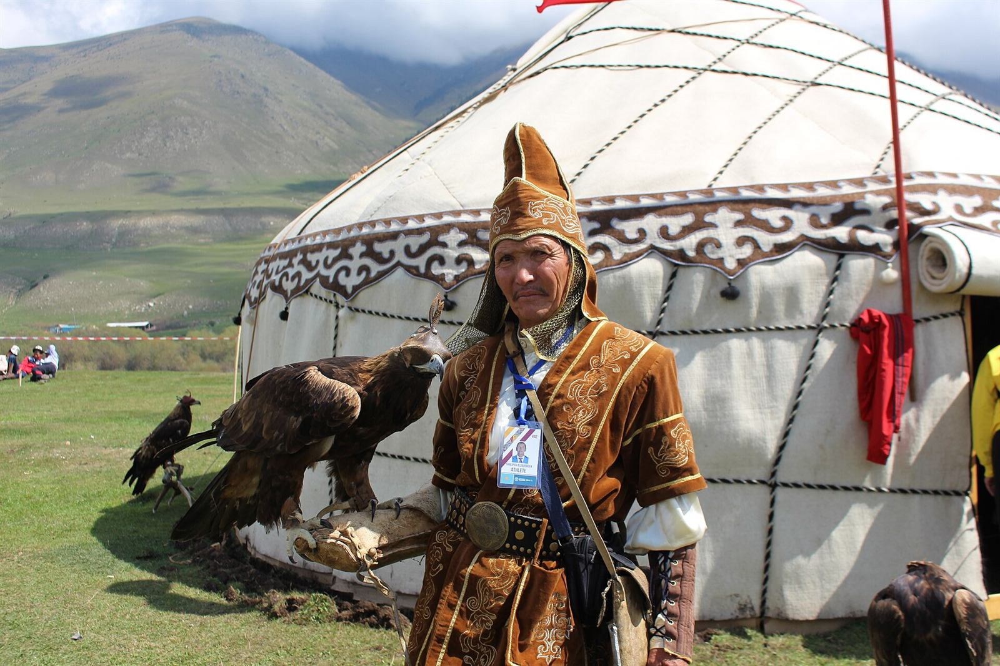
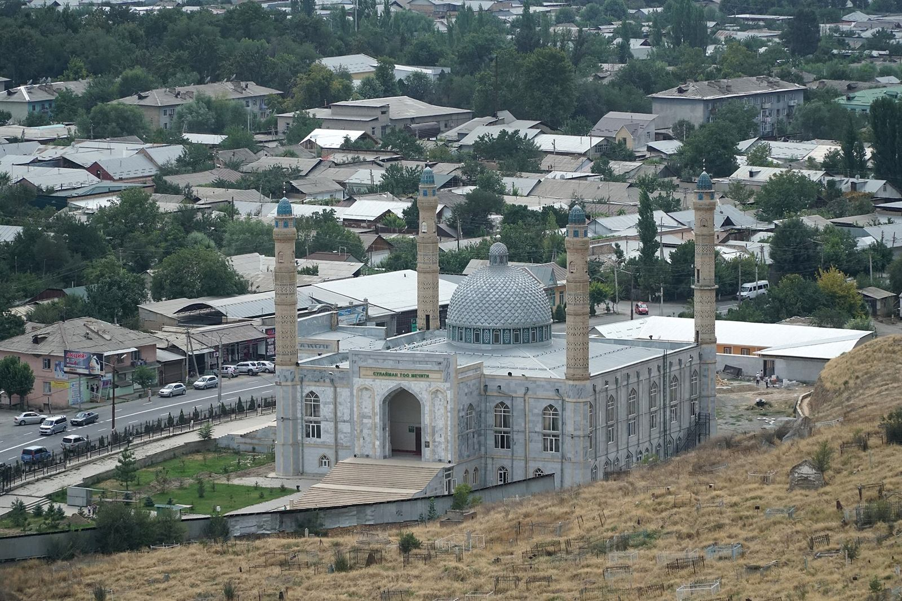
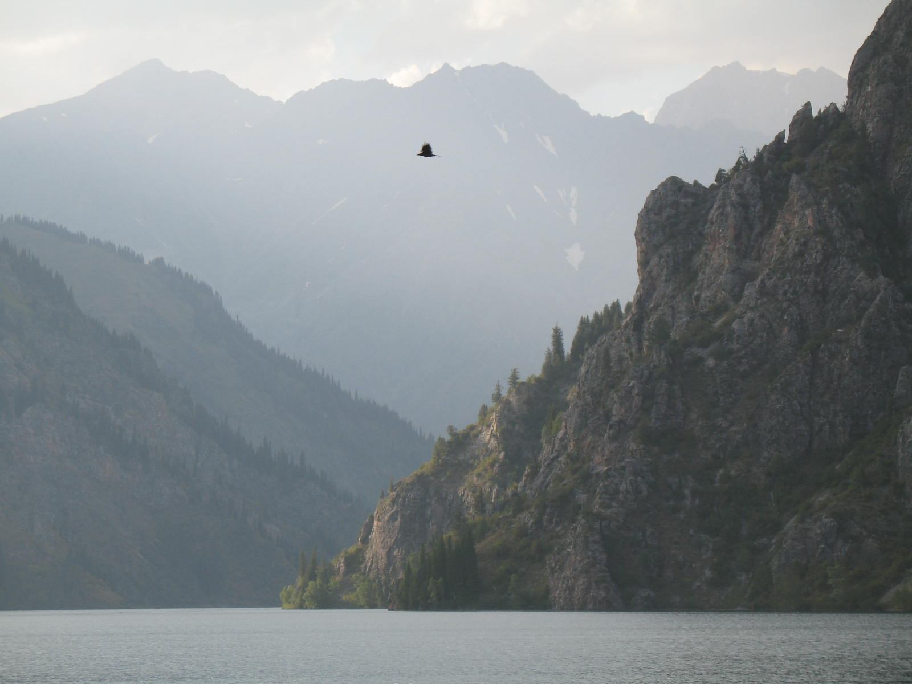

History & Heritage
From Saka nomads and Silk Road cities to an independent republic: the story of the Kyrgyz people, told in brief.
Kyrgyzstan in brief
A country of mountains
The Tian Shan range covers more than 80% of Kyrgyzstan, and the Pamir rises along the southern border. Issyk-Kul, the second-largest mountain lake in the world after Titicaca, fills a huge basin in the north-east.
Kyrgyz make up about 78% of the population, alongside Uzbeks, Russians, Dungans, Tajiks and many other communities. Most people are Muslim, with a Christian minority.
The national flag
A golden sun with 40 rays on a red field. The rays stand for the 40 tribes united by the hero Manas, and the crossed lines in the centre show the tunduk, the wooden crown of a yurt.
Key moments in Kyrgyz history
More than two thousand years of nomads, khanates, empires and independence.
Saka nomads
Saka (Scythian) tribes graze their herds in the Tian Shan and leave thousands of rock carvings, such as those at Cholpon-Ata and Saimaluu-Tash.
First written mention
Chinese chronicles mention the Kyrgyz (as Gekun or Jiankun), who then lived far to the north, on the Yenisei River in Siberia.
The Kyrgyz Khaganate
The Yenisei Kyrgyz defeat the Uyghur Khaganate, and their state reaches its greatest size, stretching across today's Mongolia.
Silk Road cities
Under the Karakhanids, Balasagun becomes a capital and Islam spreads. The Burana Tower dates from this time, and Yusuf Balasaguni writes the famous poem Kutadgu Bilig (1069).

Mongol conquest
The Mongols take the region. Over the following centuries, Kyrgyz tribes settle in the Tian Shan, the land where they live today.
Caravans in the mountains
The stone caravanserai of Tash-Rabat shelters merchants and their camels on the high route between the Fergana Valley and Kashgar.

The Kokand Khanate
The Khanate of Kokand rules the region and builds fortresses such as Pishpek, on the site of today's Bishkek.
The Russian Empire
The territory is annexed by the Russian Empire. In 1916 a revolt against wartime conscription is crushed, and many Kyrgyz flee to China, a tragedy remembered as the Urkun.
The Soviet era
The Kara-Kirghiz Autonomous Oblast (1924) becomes the Kirghiz ASSR (1926) and, on 5 December 1936, the Kirghiz Soviet Socialist Republic, with its capital in Frunze.
Independence
Kyrgyzstan declares independence from the Soviet Union. Earlier that year the capital took back its historic name, Bishkek.

World Nomad Games
Kyrgyzstan hosts the first three World Nomad Games, bringing kok-boru, eagle hunting and other nomadic sports to a world audience.

A young republic
Popular protests in 2005 and 2010 change the government, and in 2010 Roza Otunbayeva becomes the first woman to lead a Central Asian state. A 2021 referendum returns the country to a presidential system.
Three UNESCO World Heritage Sites
The epic trilogy Manas, Semetey, Seytek is also on UNESCO's list of the Intangible Cultural Heritage of Humanity.

Sulaiman-Too Sacred Mountain
A sacred mountain in the heart of Osh, once a landmark for Silk Road travellers, with ancient rock art and places of worship.
Silk Roads: Chang'an–Tianshan Corridor
Shared with China and Kazakhstan. In Kyrgyzstan it includes the ancient cities of Suyab (Ak-Beshim), Navekat (Krasnaya Rechka) and Balasagun (Burana).

Western Tien-Shan
A natural site shared with Kazakhstan and Uzbekistan. In Kyrgyzstan it covers the Sary-Chelek, Besh-Aral and Padysha-Ata nature reserves.
Sources & photo credits
The facts on this site were collected from the sources below in October 2026. All photos are freely licensed images from Wikimedia Commons.
📚 Information
- Kyrgyzstan — Wikipedia
- History of Kyrgyzstan — Wikipedia
- Tourism in Kyrgyzstan — Wikipedia
- List of World Heritage Sites in Kyrgyzstan — Wikipedia
- Kyrgyzstan — UNESCO World Heritage Centre
- evisa.e-gov.kg — e-Visa portal of the Kyrgyz Republic
- nbkr.kg — National Bank of the Kyrgyz Republic
📷 Photos (Wikimedia Commons)
Now see it with your own eyes
Walk among Silk Road ruins, climb Sulaiman-Too and sleep in a yurt like the nomads did.
Explore destinations